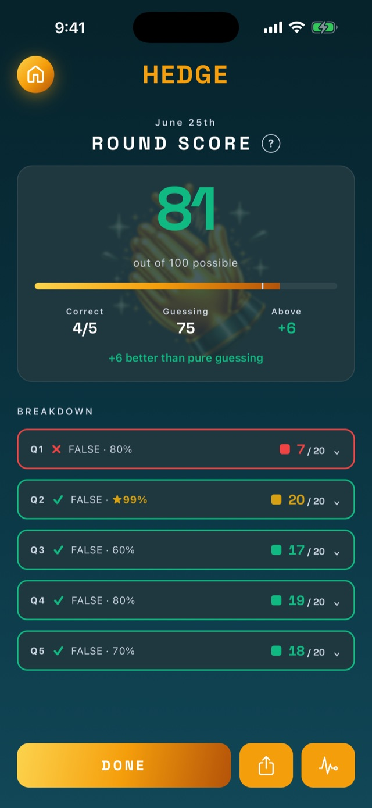
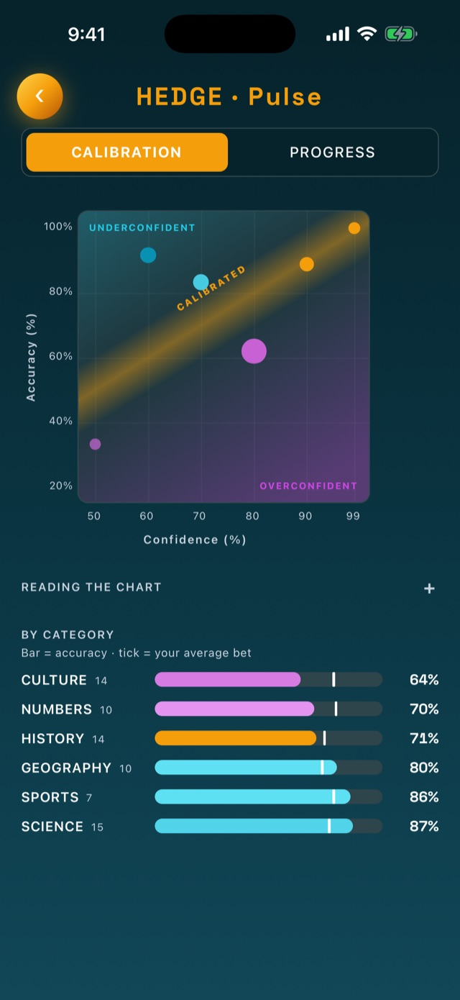

Hedge: How It's Built
A fully on-device iOS calibration game, backed by a self-hosted LLM content pipeline.
Stack: Expo SDK 55 · React Native 0.83 · React 19 · TypeScript · expo-sqlite · Node + Hono · SQLite · Gemini + Anthropic APIs
Platform: iOS · Backend for the game: none, fully on-device · Status: Live on the App Store (v2.0.0)



The idea
Most trivia rewards luck and process-of-elimination. Hedge rewards self-knowledge. Every day you get five true/false questions, and for each one you set a confidence level (50, 60, 70, 80, 90, or 99 percent) before locking in.
Scoring is Brier-based: a wrong answer at 99 percent is brutal, a hedge at 50 percent is neutral, and being right is only worth the most if you were also confident. Over many rounds, a per-confidence calibration chart reveals whether you are systematically over- or under-confident, and in which categories. The trivia is the surface. The real product is a personal calibration instrument.
Two modes feed it. The daily round is five questions, about 90 seconds, played once and locked. Gut Check is the deep dive: a curated pack of 40 to 50 questions on one topic, played in a single sitting, that ends with a focused read on how your gut performs there and that you can replay to chase mastery.
What makes it interesting
This is a small app with a deliberately large amount of system behind it. The parts I am most happy with:
A shared TypeScript core that prevents drift
Three surfaces (the game, an authoring app, and a server) all import one package, @hedge/shared, which owns the canonical types, the Brier scoring function, the SQLite schema and migration ledger, the Zod validators, and the round scheduler. The scoring math and data model are physically impossible to drift between client and server because there is only one copy.
A nice constraint: the database interface is defined structurally to match expo-sqlite's async shape, so the shared package has zero React Native runtime dependency. That lets the test suite wrap better-sqlite3 in the same interface and run pure logic under vitest with no simulator in the loop.
Scoring that protects its own signal
- Brier scores are stored denormalized next to each answer, so calibration queries are single-pass.
- A clean split between the stored raw values (what the calibration math reads) and a display transform (scaled to a friendly 0 to 100), so players never see decimals or the word "Brier" while the underlying signal stays intact.
- A
UNIQUEconstraint onanswers.question_idenforces "once answered, locked, no replays." Removing it would let players retry for a better score and destroy the calibration data, so it is treated as a load-bearing invariant. - Streaks are computed on the fly from completed rounds rather than stored, which removes an entire class of counter-drift bugs.
Gut Check: calibration as a deep dive
The daily round measures you five questions at a time. Gut Check is the focused version, and its report splits one number into two. Calibration asks whether your confidence was honest: did your 80 percent bets actually land around 80 percent of the time? Conviction asks whether your gut committed: did you bet hard on the ones you knew and hedge the ones you didn't, or play everything safe in the middle?
The first version computed both straight from a Murphy decomposition of the Brier score, calibration as reliability and conviction as resolution. It read well in a textbook and badly in the app. Reliability is a squared error, so a visibly overconfident run still scored in the nineties, and the resolution term collapsed to zero the moment a player bet a single confidence level, which a short focused run does constantly. The shipped version keeps the decomposition under the hood but reports two numbers built to be robust and legible instead. Calibration is the gap the chart already shows you, the weighted distance of your bets from the perfect-calibration line, so the figure and the picture finally agree. Conviction is a Brier skill score: how far your bets beat a blind coin flip. Both still read from the same confidence-and-outcome pairs the daily chart uses, so the two modes share one scoring core.
- Packs are a curation layer, not a second scoring system. Each pack maps to one of the six existing categories, so a Gut Check still rolls up into your overall calibration.
- Pack questions are date-inert. They live in the same table as daily questions but at a far-future sentinel date, so availability is governed by what you have unlocked, never by the calendar. Every date-driven daily query guards against pulling them into a normal round.
- First play is real; replays are practice. The first time through a pack pools into your live calibration and writes an immutable snapshot. Replays go to a separate mastery store, because the "answered once, locked" rule that protects the daily signal applies here too. A replay also reshuffles the questions so you re-read each fact instead of memorizing the deck order, and the shuffle is seeded by attempt, so pausing and resuming reproduces the same order with nothing stored. Its report sets each answer beside your first run and labels how it moved (improved, sharper, or slipped), so progress shows up per question, not just in the aggregate.
- A points economy with nothing to drift. You spend Chips to open a pack, earned from lifetime points. The balance is computed on read from a monotonic points total, so there is no spendable counter sitting in the database to corrupt or exploit.
A self-hosted LLM content pipeline
Content is its own system here, not a folder of JSON, for two reasons. The first is originality: most trivia apps draw from the same shared question banks (free ones like OpenTDB, plus commercial licensed sets), so they end up asking the same questions as each other. Generating and verifying an in-house bank means Hedge's questions are written for it, not recycled from the well everyone else uses. The second is volume: a year of daily rounds is roughly 1,800 questions, and generated candidates only yield 30 to 50 percent through review.
- Server-side generation calls Claude with a tightly constrained prompt (unambiguously true/false, sourceable, calibrated for a US audience). Large batches are chunked and the static prompt prefix is prompt-cached, so cost stays low and outputs never truncate against the token ceiling.
- Multi-stage deduplication. An exclusion list blocks exact regeneration, a TF-IDF cosine pass plus a proper-noun entity-overlap pass flags rewordings, and a second "critic" model adjudicates whether two questions are really the same fact. This catches the same fact framed two different ways, which exact-match matching misses entirely.
- Source verification. Every cited URL is fetched and judged against the claim before a question reaches review. A source that is fabricated or that contradicts the answer drops the candidate; dead links get stripped. A hallucinated citation never reaches the queue.
- Source repair. When a question's sources cannot be verified, the server searches the web for a real source for the underlying fact (the explanation is the thing being validated, whether the answer is true or false), runs it through the same fetch-and-judge check, and swaps it in. Verdicts are persisted, so the reviewer sees them without re-checking.
- A phone-based review app so vetting thousands of questions is a couch task in 30-second bursts instead of a desk marathon. It holds no data of its own and talks to the authoring server over Tailscale with bearer-token auth.
- A balancing scheduler that fills each daily round under real constraints (at most two per category, mixed difficulty, mixed trick direction) and only ever touches future dates.
- One-tap publishing. The server builds the seed file in an isolated git worktree, runs a future-only safety gate that refuses to alter any past date (which would retroactively break players' streaks), and opens a reviewable diff. Merging it ships the content over the air.
A pluggable generator, judged across vendors
Hand-curating the first Gut Check pack turned up a list of generation failures, and the worst was true/false balance. Opus 4.8 skewed hard toward true statements: only about a quarter of a batch came back false against a target of half, and a prompt rewrite aimed squarely at producing more false questions plateaued around a third. The other failures (drifting off the requested topic, telegraphing the answer) had the same shape. Every one of those rules was already in the prompt. The model just was not following them tightly.
The first fix tried to work around the skew instead of solving it. Each generated question comes with an "alternate", a truth-flipped rephrasing of the same fact, so a surplus true question can be swapped to its false twin and rebalance a batch for free. But Opus produced a usable alternate for only about a third of its questions, and not always a good one, so the lever ran short exactly when a batch was most lopsided. That reframed the problem from "build more balancing machinery" into "find a model that follows the balance rule on its own."
So I ran a bake-off instead: three models, one identical prompt, Opus 4.8 against Gemini 3.5 Flash and GPT-5.5. The metrics favored one model and reading the actual questions favored another. GPT-5.5 scored 95 percent on the alternate-phrasing metric but wrote flat, voiceless trivia and made the same "easy answer over the sharp false" mistake already on my list. Gemini Flash wrote questions with voice, the oblique near-miss shapes I had been hand-selecting, hit a clean 50 percent true/false split in every category, and is free. On the metrics alone, GPT-5.5 wins; reading twenty of its questions is what ruled it out.
The migration stayed small: a generation-only seam that routes by model id and keeps Anthropic prompt-caching intact, with the critic, deduplication, and source verification left on Anthropic. That makes the pipeline cross-vendor by construction, one model writing and a different vendor judging, which removes a shared-blind-spot failure mode for free.
The honest part came at sign-off. The pre-build check tested source reliability on one category, history, and concluded Gemini cited real URLs. The live run generated a sports batch, and the verifier dropped 16 of 20 questions. The facts were true, but Gemini had invented plausible deep links on official sites (nba.com, masters.com) that 404. History leans on Wikipedia, which it cites accurately; sports leans on official-site links, which it guesses. Two things held: the verifier did exactly its job and the bank was never polluted, and a one-paragraph prompt nudge to prefer Wikipedia took the drop from 16 of 20 back to 5 of 20, on a free model. A single-category check was one data point dressed up as a conclusion.
Ship content without App Store review
The game delivers new questions through Expo over-the-air updates: a push to main reaches players in about 30 seconds with no re-review. Native builds (new modules, icons) are a separate, deliberate manual step. Getting this right meant learning some sharp edges the hard way, including pinning runtimeVersion after a fingerprint policy silently orphaned older builds from the update stream, and adding path filters so documentation and tooling changes never burn a build minute.
Data-driven theming and "special days"
A composable, dark-first theme system (independent accent, background, and motif layers) sits on top of the base theme. A specific calendar date can also become a special day: a custom theme plus greeting that travels to the game as data in the content file, so a holiday look ships through the same update as questions, with no hardcoded packs and no rebuild. The end-of-round celebration escalates by performance tier, up to a perfect-game finale with confetti cannons firing in sequence from the bottom corners.
Architecture
hedge/
apps/
game/ # Player app, ships to the App Store. Fully on-device.
admin/ # Question-authoring app. Thin HTTP client, never published.
packages/
shared/ # Canonical types, scoring, DB schema, validators, scheduler
services/
admin-server/ # Node + Hono + SQLite authoring backend (self-hosted)- The shipped game has no backend. No accounts, no analytics, no telemetry. Everything is local SQLite. The App Store privacy label is "Data Not Collected," and that is literally true.
- The authoring stack is completely separate from the game bundle, which keeps admin code out of App Review and out of the shipped binary.
Tech stack
| Area | Choice |
|---|---|
| App framework | Expo SDK 55, React Native 0.83, React 19, TypeScript |
| Navigation | expo-router (typed routes) |
| Animation | Reanimated + Gesture Handler; calibration chart hand-drawn with Animated primitives (no Skia dependency by choice) |
| Persistence | expo-sqlite on device; append-only migration ledger in shared |
| Authoring server | Node + Hono + better-sqlite3, self-hosted, reached over Tailscale |
| Generation | Multiple providers (Gemini + Anthropic) behind one seam, Zod validation, prompt-caching; an Anthropic critic for dedup, plus fetch-and-judge source verification |
| Tooling | pnpm workspaces, vitest, EAS Build + Expo OTA |
Engineering practices
- Pure logic lives in the shared package and is unit-tested with vitest, so the scheduler, dedup similarity, scoring, and publish safety-gate are covered without a simulator.
- Append-only migrations with two ledgers: one shared schema for game and server, one server-only ledger so authoring tables never reach the game database.
- Trunk-based with cost discipline: feature branches, path-filtered CI so only player-facing changes trigger builds, and OTA for everything that does not touch native code.
- Documentation as a first-class artifact: design, scoring, pipeline, admin, and release docs are checked into the repo and kept current with the code.
- A bias toward reading the output. Automated metrics rank generation candidates; a human reading twenty actual questions is what decides which model ships. The bake-off that picked the generator came down to voice, not counters.
- Tests as messages to the future. A dormant seasonal-pack mechanism (year-wrap date windows) ships fully tested, with a registry pin that fails loudly the day the first seasonal pack is added, so whoever lands it re-reads the rules before it ships.
Status
Live on the App Store as v2.0.0, which adds Gut Check on top of the daily round; everything since (features, fixes, and content) has shipped over the air to that same binary. Roughly 740 verified daily questions are scheduled out several months, alongside five curated Gut Check packs of about 245 more, all generated and vetted through the pipeline above. Single-developer project, end to end: product, data model, scoring design, content tooling, and release engineering.
The calibration and scoring primitives are factored so one core powers both the daily round and Gut Check, and could power a planned sibling app (an active-recall study tool) without touching any of the trivia-specific code.
This page is the evergreen picture. Engineering events (campaigns, incidents, bake-offs) are documented as they happen in the build log.